Três anos depois de derrotar os Bakers e Eveline em Dulvey, Ethan e Mia Winters foram transferidos à Europa por Chris Redfield,
a fim de começarem uma nova vida com sua filha recém-nascida, Rosemary Winters.
Em uma determinada noite, Mia é assassinada por Chris Redfield enquanto ele e seu esquadrão Houndwolf invadem a casa,
deixando Ethan inconsciente e sequestrando-o junto com sua filha. Ao acordar, Ethan se depara ao lado de um caminhão de transporte capotado,
chegando a nas proximidades de uma vila aterrorizada por licanos. Ethan é incapaz de salvar os aldeões restantes,
sendo capturado e levado perante a sacerdotisa da aldeia, denominada de Mãe Miranda e os quatro Lordes.
Ethan consegue escapar de seus captores e se aventura no castelo de Lady/Alcina Dimitrescu para encontrar Rosemary — com o apoio de
um comerciante local conhecido como Duque. Ethan elimina Dimitrescu e suas filhas Bela, Cassandra e Daniela, encontrando um frasco
contendo a cabeça de Rosemary em um frasco. O duque explica que Miranda colocou as partes do corpo de Rosemary em quatro frascos
diferentes para um ritual especial e que ela pode ser restaurada se Ethan recuperar os outros frascos mantidos pelos senhores restantes.
Posteriormente, enquanto luta contra os lordes Beneviento e Moreau por seus frascos, Ethan descobre que o esquadrão Houndwolf
também está na vila. Ethan passa no teste do último lorde, Heisenberg, em busca do quarto e último frasco — a qual é convidado para
a fábrica do lorde — onde Heisenberg oferece uma proposta para derrotar Miranda juntos. Entretanto, Ethan recusa-se a trabalhar
junto com Heisenberg entrando em combate com o lorde. Ethan encontra e confronta Chris sobre a morte de Mia, descobrindo que a "Mia"
que Chris matou durante a cutscene inicial, na verdade era Miranda disfarçada de sua esposa. Chris revela que Miranda queria Rosemary
para a cerimônia, a fim de trazer sua filha Eva morta no final da Primeira Guerra Mundial, durante a pandemia da gripe espanhola.
Chris destrói a fábrica de Heisenberg enquanto Ethan usa um tanque improvisado para derrotar Heisenberg.
Miranda confronta Ethan e o mata depois que ela revela seus planos de tomar Rosemary como sua filha.
Chris testemunha a morte de Ethan e leva-o para o esquadrão Houndwolf junto com Rosemary.
Enquanto a força de assalto BSAA distrai Miranda, entrando em uma caverna abaixo da vila,
descobre-se o local do Megamuceto (chamado de "raiz fúngica") — a fonte do molde.
Chris planta uma bomba no Megamuceto e prossegue nas cavernas onde encontra o laboratório de Miranda,
descobrindo que ela viveu um século desde que entrou em contato com o fungo, sendo a mentora do Oswell E.
Spencer, fundador da Umbrella Corporation. Miranda usou o conhecimento coletivo daqueles que o fungo registrou para transformar
a vila em seu laboratório pessoal para reviver sua filha, Eva, com os quatro lordes e Eveline, que possuía o DNA de Eva, sendo experimentos fracassados.
Ela encontrou compatibilidade em Rosemary, a quem considerou uma Eveline aperfeiçoada devido às suas habilidades especiais herdadas
de Ethan e Mia. Chris também resgata a prisioneira Mia, descobrindo que Ethan ainda está vivo quando Mia revela seus poderes.
Ethan revive após encontrar Eveline no limbo, revelando que ele foi morto em seu primeiro encontro com Jack Baker em Dulvey,
mas foi revivido pelo molde que lhe deu poderes regenerativos. O Duque leva Ethan ao local do ritual onde Miranda está tentando reviver Eva, mas só consegue reviver Rosemary.
Miranda enfurecida batalha com Ethan, que a mata, antes que o Megamuceto surja do chão. Ethan, com o corpo se deteriorando por ter atingido seu limite, se sacrifica para detonar a bomba que Chris plantou no fungo, visando dar-lhes tempo da esquadrão fugir para um local seguro. Enquanto Mia lamenta a perda de Ethan, Chris descobre que os soldados da BSAA enviados para a vila eram armas biológicas orgânicas, ordenando que seu esquadrão se dirija ao quartel-general europeu da BSAA para obter respostas. Em uma cena pós-crédito, a adolescente Rosemary visita o túmulo de Ethan antes de ser chamada para uma missão em nome de uma organização não revelada.
Enquanto ela e sua escolta se afastam, uma figura desconhecida é vista se aproximando de seu veículo.
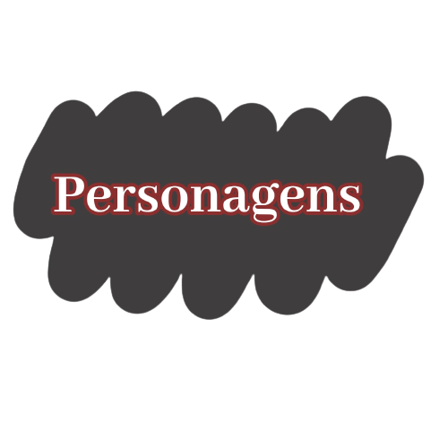
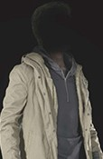
ETHAN WINTERS:
Protagonista de Resident Evil 7, a história de Ethan continua em Resident Evil Village.
Depois de ter sido arrastado para os eventos do incidente na Louisiana com os Bakers e sobreviver daquele pesadelo,
ele a sua esposa, Mia, tem vivido tranquilamente sob a proteção da B.S.A.A..
Só que essa paz repentinamente interrompida quando ele e a filha do casal, Rosemary Winters, ou apenas Rose, são sequestrados.
Ethan precisa fazer de tudo para salvar a sua vida e da pequena Rose.
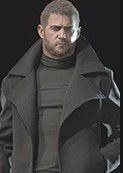
CHRIS REDFIELD:
Um dos principais personagens da série desde o primeiro Resident Evil, este ex-membro do S.T.A.R.S.
serviu lutando em inúmeros incidentes de bioterrorismo.
Nos eventos de Resident Evil Village ele trabalha como especialista para a B.S.A.A., uma ONG de combate ao bioterror.
Liderando o esquadrão Hound Wolf (Lobo de Caça), Chris captura Ethan Winters e sua filha Rose.
MIA WINTERS:
Esposa de Ethan. A organização da qual ela fez parte desenvolveu a arma biológica que causou o incidente na casa dos Baker (Resident Evil 7).
Agora tudo o que Mia procura é viver feliz com sua família na Europa sob a proteção da B.S.A.A..
Só que algo dá errado com a chegada de um “herói” do passado, Chris Redfield.
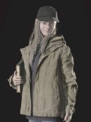
ROSEMARY WINTERS:
Filha de Ethan e Mia Winters, que é sequestrada por Chris!
Rose parece ser um objeto de desejo de muitos dos envolvidos neste novo trágico incidente na vida dos Winters.
Quando adulta, Rose passa a trabalhar com Chris Redfield.
Ela ficou sobre a proteção dele para que tivesse suas habilidades supervisionadas.
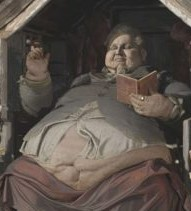
DUQUE:
Um homem estranho do vilarejo. Ele tem uma grande seleção de mercadorias em sua loja.
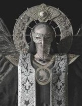
MÃE MIRANDA:
Miranda é a governante da aldeia. Tem quatro Lordes, que ela considera como filhos, servindo aos seus propósitos.
Os aldeões têm uma fé devota nela, mas seu verdadeiro rosto, escondido atrás de uma máscara,
é apenas um dos muitos mistérios que cercam esta mulher.
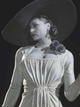
ALCINA DIMITRESCU:
A senhora do castelo com vista para a vila.
Uma mulher alta, imponente e elegante.
Uma das 4 figuras que dominam a vila sob o comando de Mãe Miranda. Lady Dimitrescu tem a ajuda de suas três filhas para auxiliar em suas tarefas.
Juntas elas podem ser implacáveis.
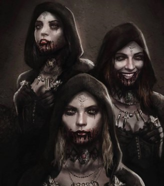
BELA, CASSANDRA E DANIELA DIMITRESCU:
As filhas de Lady Dimitrescu são fieis a sua mãe e donas de habilidades extraordinárias. Adoram brincar com suas “presas” antes de matá-las.
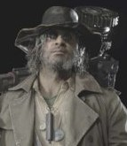
KARL HEISENBERG:
Um homem misterioso que empunha um martelo enorme.
Um dos quatro Lordes dominantes, Heisenberg possui uma alta afinidade com materiais metálicos.
É dono de uma fábrica aos arredores da vila.
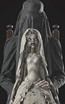
DONNA BENEVIENTO:
Uma “titereira” que vive em um vale cheio de névoa e uma das quatro figuras que servem Miranda.
Ela é envolta em trajes de luto e está sempre acompanhada por sua boneca, Angie.
Fascina por bonecas ela coleciona. Tem uma variedade bem grande delas, considerando inclusive Angie mais do que apenas um brinquedo.
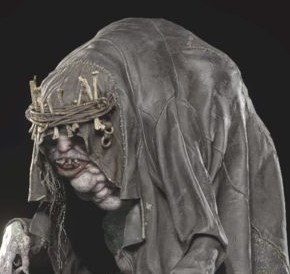
SALVATORE MOREAU:
Homem bizarro que se esconde em um reservatório e um dos quatro Lordes que servem Miranda.
Ele esconde sua forma retorcida de olhos curiosos com um manto.
Moreau é geralmente subestimado e excluído pelos outros Lordes, seus irmãos, e deseja provar seu valor.
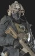
SHOUDED WOLF:
O esquadrão de elite liderado por Chris Redfield.
Ele é composto por membros com codinome: Olhos Castanhos, Lobo, Canino, Uivo Noturno e Tundra.
Todos auxiliam Chris, seu capitão, na missão ao vilarejo.
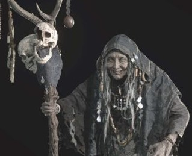
A VELHA:
Uma senhora misteriosa que aparece ocasionalmente para dar algumas informações estranhas a Ethan sobre sua filha.
Direção do Jogo Resident Evil Village
.
Desenvolvedora(s)
Capcom
Publicadora(s)
Capcom
Diretor(es)
Morimasa Sato
Produtor(es)
Tsuyoshi Kanda
Peter Fabiano
Masachika Kawata
Designer(s)
Isamu Hara
Escritor(es)
Antony Johnston
Programador(es)
Tetsuro Noda
Masaharu Kamo
Artista(s))
Tomonori Takano
Compositor(es)
Shusaku Uchiyama
Motor
RE Engine
Plataforma(s)
Microsoft Windows
PlayStation 4
PlayStation 5
Stadia
Xbox One
Xbox Series X/S
Em Hesident Evil Village que é o preferido entre os fãs, os desenvolvedores e progamadores fizeram um motor gráfico exclusivo, o RE Engine, utilizado em jogos como Resident Evil 2 e 7 e Devil May Cry 5.